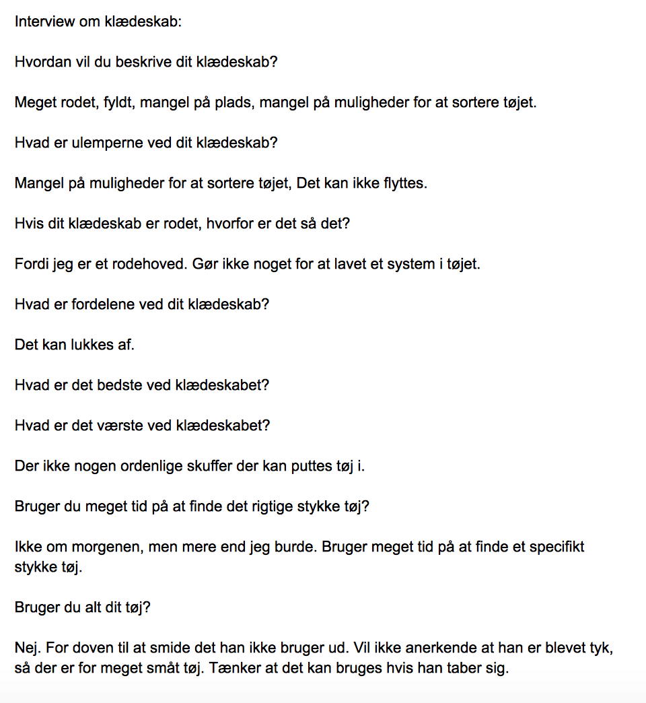

Brugerinterview - selvstændigt
I dette interview beskriver brugeren af klædeskabet hvordan det roder i hans skab. Skabet er ikke særligt fleksibelt, så det kan være svært at opretholde orden og lave systemer til tøjet. Det kan følelsesmæssigt for brugeren, gå hen og blive frustrerende, hvis der skal findes et bestemt stykke tøj. Brugeren er ikke god til selv at holde orden i skabet, og det skyldes mest dovenskab. I og med der ikke er noget orden i skabet, bliver der spildt for meget tid med at lede efter det rigtige stykke tøj. Det som brugeren ville ønske der var bedre ved skabet er flere hylder/skuffer inde i skabet til at organisere tøjet bedre.
